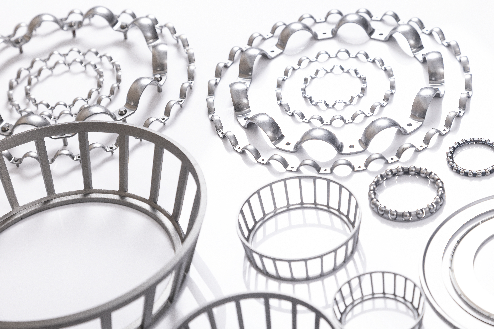
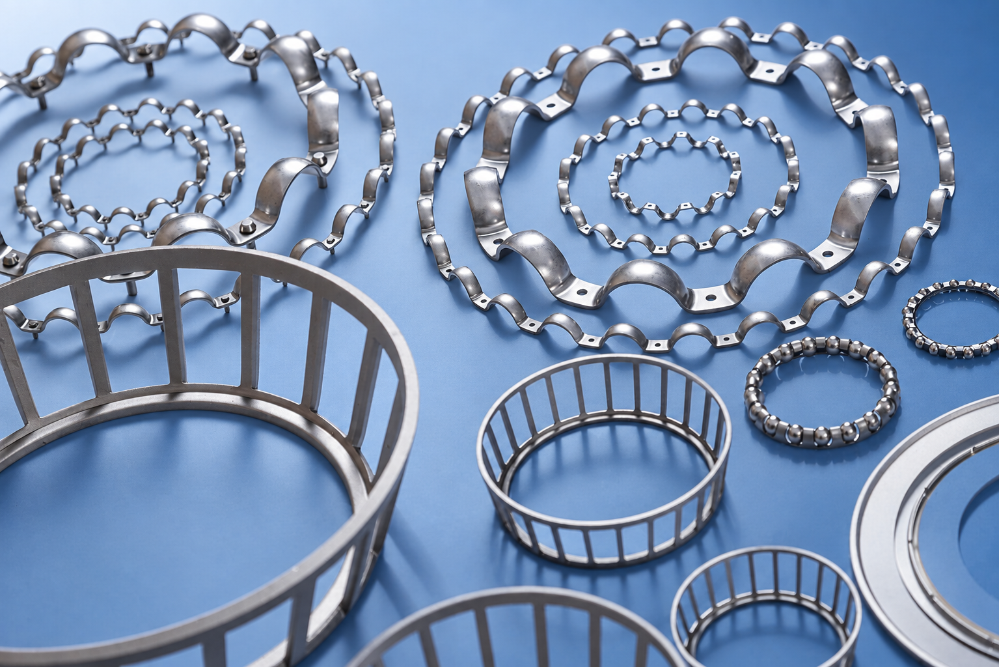

<!doctype html><html lang="ko"><meta charset="utf-8"><meta name="viewport" content="width=device-width,initial-scale=1"><meta name="robots" content="noindex"><title>삼호 제품 이미지 · 원본 비교</title><style>
*{box-sizing:border-box}body{margin:0;background:#f5f7fa;color:#21354d;font:15px/1.6 -apple-system,BlinkMacSystemFont,"Apple SD Gothic Neo",sans-serif}main{max-width:1500px;margin:auto;padding:28px}h1{font-size:26px;margin:0 0 8px}p{color:#65748a;margin:0 0 16px}nav{display:flex;flex-wrap:wrap;gap:8px;margin:18px 0}button,a{font:inherit}button{border:1px solid #ccd8e7;border-radius:8px;background:white;color:#21354d;padding:8px 12px;cursor:pointer}button[aria-pressed=true]{background:#225fba;color:white;border-color:#225fba}.pair{display:grid;grid-template-columns:1fr 1fr;gap:16px}.label{font-weight:650;margin-bottom:8px}.frame{position:relative;aspect-ratio:3/2;overflow:hidden;background:#e9edf3;border-radius:12px}.frame img{display:block;width:100%;height:100%;object-fit:cover;transform-origin:var(--x,50%) var(--y,50%);transform:scale(var(--zoom,1))}main.zoom .frame{aspect-ratio:1/1}footer{margin-top:20px}a{color:#215cab;margin-right:20px}#note{margin-top:16px}@media(max-width:600px){main{padding:18px}.pair{grid-template-columns:1fr}h1{font-size:22px}}
</style><main><h1>25-02 · 블루 배경 시안</h1><p>왼쪽은 제공한 원본, 오른쪽은 6번의 블루 톤을 적용한 AI 편집본입니다.</p><nav aria-label="비교 영역"><button data-view="0" aria-pressed="true">1 · 전체 배치</button><button data-view="1" aria-pressed="false">2 · 케이지 구조</button><button data-view="2" aria-pressed="false">3 · 굴곡과 구멍</button><button data-view="3" aria-pressed="false">3 · 왼쪽 체결부</button><button data-view="4" aria-pressed="false">4 · 작은 부품과 경계</button><button data-view="5" aria-pressed="false">4 · 전경 테두리</button></nav><section class="pair"><div><div class="label">원본 · 25-02.jpg</div><div class="frame"></div></div><div><div class="label">AI 편집 · 블루 시안</div><div class="frame"></div></div></section><p id="note">제품 배치와 원형 구조를 원본과 비교합니다.</p><footer><a href="samho-collection-blue-v1.png" download>시안 PNG 저장 ↓</a><a href="prompt.txt">사용한 프롬프트</a></footer></main><script>
const views=[{z:1,x:50,y:50,n:'제품 배치와 원형 구조를 원본과 비교합니다.'},{z:1.8,x:28,y:75,n:'큰 케이지와 중앙 케이지의 테두리, 기둥, 창을 확인합니다.'},{z:2.1,x:75,y:15,n:'상단 오른쪽 부품의 굴곡, 구멍, 연결부를 확인합니다.'},{z:2.2,x:12,y:12,n:'상단 왼쪽의 핀과 체결부를 확인합니다.'},{z:2.5,x:100,y:57,n:'오른쪽 작은 부품의 반복 구조와 배경 경계를 확인합니다.'},{z:2,x:50,y:100,n:'아래쪽 부품의 테두리, 배경 경계와 반사광을 확인합니다.'}];document.querySelectorAll('button').forEach(b=>b.onclick=()=>{const v=views[+b.dataset.view];document.querySelector('main').classList.toggle('zoom',v.z>1);document.querySelectorAll('.frame').forEach(f=>{f.style.setProperty('--zoom',v.z);f.style.setProperty('--x',v.x+'%');f.style.setProperty('--y',v.y+'%')});document.querySelectorAll('button').forEach(x=>x.setAttribute('aria-pressed',String(x===b)));document.querySelector('#note').textContent=v.n});
</script></html>
